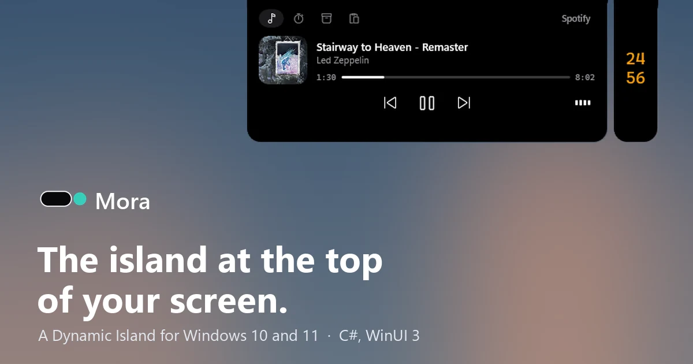
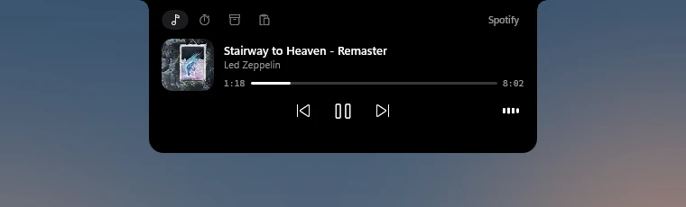
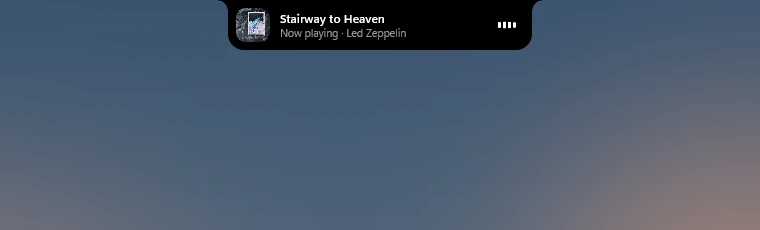
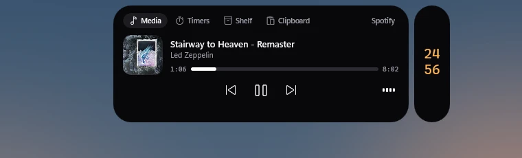
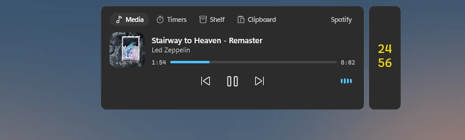

Une Dynamic Island pour Windows : la musique, les minuteurs, une étagère de fichiers et l'historique du presse-papiers dans une pilule en haut de l'écran, qui ne prend jamais le clavier. A Dynamic Island for Windows: music, timers, a file shelf and clipboard history in a pill at the top of the screen, which never takes your keyboard.

Sur Mac, des apps comme NotchNook transforment l'encoche en un petit centre de contrôle. Sur Windows, rien d'équivalent qui respecte deux choses : le clavier et les jeux. Une fenêtre qui vole le focus pendant qu'on tape, ou qui surgit en pleine partie, est pire que pas de fenêtre du tout.
On a Mac, apps like NotchNook turn the notch into a small control center. On Windows, nothing equivalent respects two things: the keyboard and games. A window that steals focus while you type, or pops up mid-game, is worse than no window at all.
Mora affiche ce qui se passe maintenant (morceau en cours, minuteur, téléchargement terminé, casque connecté, micro ou caméra utilisés), s'ouvre avec un raccourci, puis s'efface. Son nom vient du malgache « mora mora » : doucement, tranquillement.
Mora shows what is happening right now (the current track, a timer, a finished download, headphones connected, the microphone or camera in use), opens with a shortcut, then gets out of the way. Its name comes from the Malagasy "mora mora": easy, gently.




Ne jamais prendre le clavier. La fenêtre ne s'active jamais (WS_EX_NOACTIVATE, MA_NOACTIVATE), et une région de fenêtre suit la forme de l'île pour que tout autour reste cliquable. Un test automatique tape plus de 3 000 caractères dans sa propre fenêtre pendant qu'il fait passer l'île par tous ses états : il ne passe que si chaque caractère arrive.
Never take the keyboard. The window never activates (WS_EX_NOACTIVATE, MA_NOACTIVATE), and a window region follows the island's shape so everything around it stays clickable. An automated test types over 3,000 characters into its own window while it drives the island through every state: it passes only if every character arrives.
Une forme dessinée par le compositeur. L'île est un rectangle arrondi de la couche de composition, animé par des ressorts : la redimensionner ne déclenche aucune mise en page XAML. Une ouverture plus une fermeture sont passées de 0,53 s à 0,24 s de CPU.
A shape drawn by the compositor. The island is a composition rounded rectangle driven by springs: resizing it triggers no XAML layout. An open plus a close went from 0.53 s to 0.24 s of CPU.
Reconnaître les vrais jeux. Plein écran ne veut pas dire jeu : la capture de Snipping Tool aussi. Mora croise la liste de jeux de la Game Bar, les dossiers des lanceurs et le plein écran exclusif. Certains jeux, comme League of Legends, désactivent les raccourcis globaux : un hook clavier bas niveau prend le relais, seulement pendant ces jeux.
Telling real games apart. Fullscreen does not mean game: Snipping Tool's capture is fullscreen too. Mora checks the Game Bar's game list, game launcher folders and exclusive fullscreen. Some games, like League of Legends, disable global hotkeys: a low-level keyboard hook takes over, only while such a game runs.
Rien n'est capturé. La waveform lit le niveau de crête des sorties audio, sans jamais enregistrer le son. Le micro et la caméra se détectent par les sessions de capture audio et le moniteur d'activité caméra de Windows.
Nothing is captured. The waveform reads the peak level of the audio outputs, without ever recording sound. The microphone and camera are detected through audio capture sessions and Windows' camera activity monitor.
Pas encore d'installeur signé : on l'installe avec un script qui compile le projet. Les écrans à mise à l'échelle différente n'ont pas été testés, et les fenêtres natives de volume de Windows ne sont pas masquées.
No signed installer yet: it is installed with a script that builds the project. Monitors with different scaling were not tested, and Windows' native volume flyouts are not hidden.